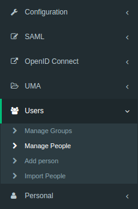
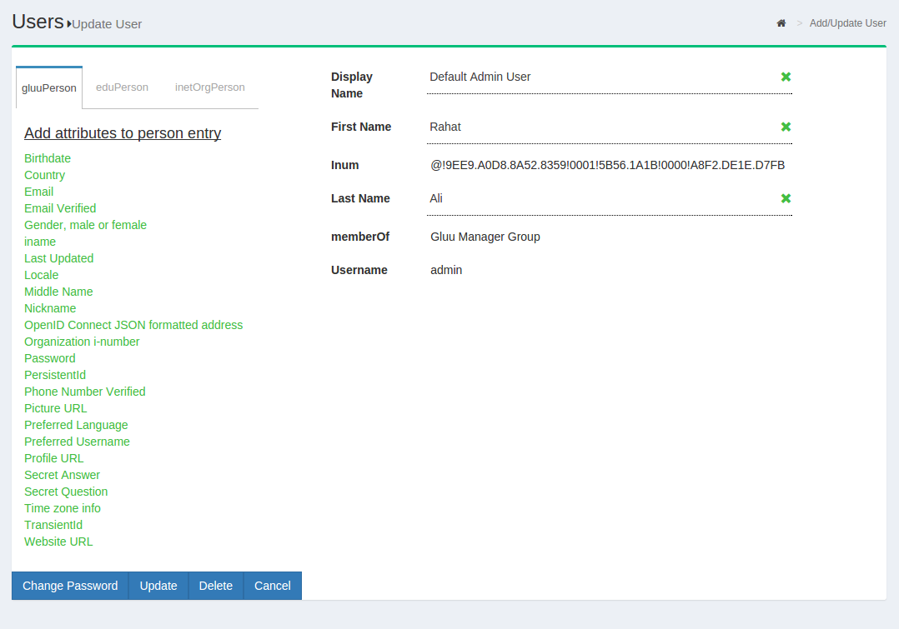
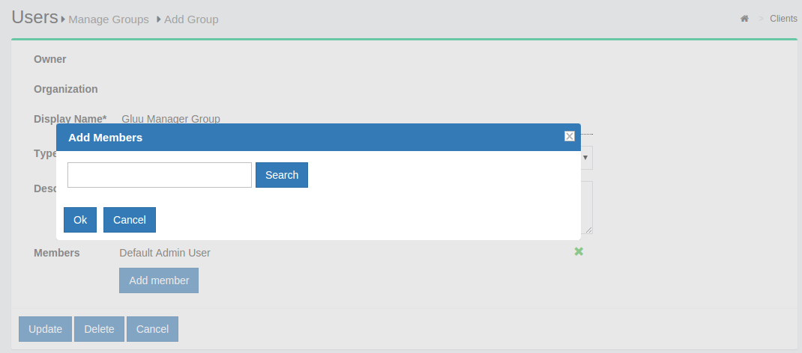
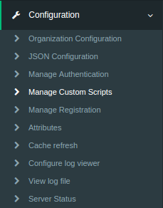

User Management in Gluu Server#
To keep the Gluu Server up-to-date with the latest user claims, your organization can either "push" or "pull" identity data. In the "pull" mode, otherwise known as LDAP Synchronization or Cache Refresh, the Gluu Server can use an existing LDAP identity source like Microsoft Active Directory as the authoritative source of identity information. If you "push" identities to the Gluu Server, you can use the JSON/REST SCIM API. Local user management can also be performed inside oxTrust. Each method is detailed below.
Local User Management#
In oxTrust, you can add, edit and manage people, groups and user attributes and claims to ensure the proper information is released about the right people.
People#
To manage people, navigate to User > Manage People, as shown in the screenshot below.

From this interface you can add users and search for specific users. Because the user database can potentially be very large, a value is required in the search field. In other words, you can not click search with a blank entry to populate all users. If you need to see all users, this would be best performed manually within the Gluu OpenDJ server. Upon performing a user search, a list will be populated with all users that match the search, as shown in the screenshot below.
To edit a user, simply click on any of the hyperlinks associated with that user and you will be taken to a user management interface where you can modify that specific attributes relating to that user as displayed below.

Groups#
Out of the box, the Gluu Server includes one group: Gluu Server manager group, named: “gluuManager”. Groups can be added and populated as needed. By using the Manage Groups feature, the Gluu Server Administrator can add, delete or modify any group or user within a group. The list of available groups can be viewed by hitting the Search button with a blank search box.
The Gluu Server Administrator can modify information such as Display Name, Group Owner, Visibility type etc. The Server Administrator can also add or delete users within existing groups. The group information is represented as shown below.
If any member of the Organization is required to be added in any specific group, this can be achieved be clicking on the Add Member button. The flow is Add Member --> Search the name/email of the user --> Select the user --> Click OK --> Update. 
Cache Refresh#
Cache Refresh is the process of connecting an existing backend LDAP server, like Microsoft Active Directory, with the Gluu Server's local LDAP server. Synching people and attributes from a backend server into the Gluu Server speeds up authentication transactions. It is possible to perform attribute transformations, changing the name of attributes, or even using an interception script to change the values. Transformations are stored in the Gluu LDAP service.
-
Last Run: The date and time of the latest cache refresh cycle completion is shown here.
-
Updates at the Last Run: This shows the total number of users who have been updated in the last Cache Refresh cycle. For example an user who has any of his attribute updated will show up here.
-
Problem at the Last Run: This shows the number of users who have been rejected by the Gluu Server during the update. If there are any rejections, please contact Gluu Support for clarification and help.
Customer Backend Key and Attributes#
-
Key Attribute: This is the unique key attribute of backend Active Directory/LDAP Server such as SAMAccountname for any Active Directory.
-
Object Class: This contains the Object Classes of the backend Active Directory/LDAP which has permission to talk to Gluu Server Cache Refresh such as person, organizationalPerson, user etc.
-
Source Attribute: This contains the list of attributes which will be pulled and read by the Gluu Server.
-
Custom LDAP Filter: If there is any custom search required, this filtering mechanism can be used such as "sn=*" whereas the value of this field ensures that every user must contain an attribute named SN.
Source Backend LDAP Servers#
This section allows the Gluu Server to connect to the backend Active Directory/LDAP server of the organization.
-
Name: Please input source as the value.
-
Use Anonymous Bind: Some customers do now allow username/password connections to their backend server. Enable this option if this applies to your organization.
-
Bind DN: This contains the username to connect to the backend server. You need to use full DN here. As for example, cn=gluu,dc=company,dc=org.
-
Use SSL: Use this feature if the backend server allows SSL connectivity.
-
Max Connections: This value defines the maximum number of connections that are allowed to read the backend Active Directory/LDAP server. It is recommended to keep the value of 2 or 3.
-
Server: This contains the backend Active Directory/LDAP server hostname with port i.e. backend.organization.com:389. If organization has a failover server, click Add Server and add more hostnames with port.
-
Base DN: This contains the location of the Active Directory/LDAP tree from where the Gluu Server shall read the user information.
-
Enabled: This check-box is used to save and push the changes. Do not use this unless the server administrator has entered all the required values.
-
Change Bind Password: This can be used for a new password or to change any existing password.
If your organization has a multiple Active Directory/LDAP server, click on Add source LDAP server and add the additional server information. Please remember that a failover server is not a new server.
Inum LDAP Server#
This section of the application allows the server administrator to connect to the internal LDAP of the Gluu Server. As Gluu Server administrator, you do not need to insert anything here in this section as new Gluu Server versions automatically populates this for you (unless you try to manually configure it anyway).
-
Refresh Method: The Gluu Server allows the Server Administrator to apply two types of Cache Refresh mechanism--(i) VDS Method and (ii) Copy Method.
-
VDS Method: Any organization with a database like mysql can use the VDS method. This option can be enabled via the drop-down menu in Refresh Method option.
- Copy Method: If the organization has any kind of Active Directory/LDAP server, they are strongly recommended to use the Copy Method from the drop-down menu.
Attributes Mapping#
When the Copy method is selected, a section for Attribute mapping will be exposed. In this section, the Gluu Server Administrator can map any attribute from the backend Active Directory/LDAP to the LDAP cache of the Gluu Server.
In the source attribute to destination attribute mapping field, you can enter the source attribute value on the left, and the destination attribute on the right. In other words, you can specify what the attribute is on the backend in the left field, and what it should be rendered as when it comes through the Gluu Server in the right field.
The Administrator can select any Cache Refresh Method according to the backend Active Directory/LDAP server, but there are some essential values for both types of cache refresh method. The values are given below.
-
Pooling Interval (Minutes): This is the interval value for running the Cache Refresh mechanism in the Gluu Server. It is recommended to be kept higher than 15 minutes.
-
Script File Name: The Gluu Server cache refresh can accept any kind of Jython Script which might help to calculate any custom/complex attribute i.e. eduPersonScopedAffiliation. For more information please contact Gluu Support.
-
Snapshot Folder: Every cycle of of Gluu Server Cache Refresh cycle saves an overall snapshot and problem-list record on a specified location. This is where the Gluu Server Administrator can specify the location. You can easily decide whether cache refresh synchronizes all users or not. Generally the rejected users are enclosed in the problem-list file. An overall report is displayed at the top of the cache refresh page with headings Updated at the last run and Problems at the last run.
-
Snapshot Count: This defines the total number of snapshots that are allowed to be saved in the hard drive of the VM. It is recommended to be kept to 20 snapshots.
Latest Gluu Servers (including Community Edition) introduced two upgraded sections here.
-
Server IP Address: Include the IP of your Gluu Server here. This feature helps to run Cache Refresh mechanism perfectly in a clustered environment.
-
Removed Script File Name location: New version of the Gluu Server allows the administrator to manage your custom scripts with more interactive section under configuration named Manage Custom Scripts.
-
Update: This button is used to push the changes in the Gluu Server. Hit this button only when the values have been entered, completely.
-
Update and Validate Script: This button is used to test the operation and integrity of any custom script such as a Jython Script.
Import People from file#
Gluu Server allows the administrator to add users from files. This can be accessed from the Import People button from the Users menu.
- Click on the
Addbutton to select the file from which the users will be imported. This feature has been tested with axlsfile.
- The file needs to be validated before it can be imported. Click on the
Validatebutton.
- Click on the
Importbutton to complete the import of users.
File Scructure#
The file needs to contain the following fields from which the user data will be pulled. Please remember to use the exact spelling as shown here.
-
Username
-
First Name
-
Last Name
-
Email
Register User#
Self-Registration is done by users on a self-service basis. Since oxTrust user registration cannot add users to a backend LDAP or Active Directory server, self-registration will only be effective if GluuLDAP is used for authentication of users.
BY default a a limited number of attribute is present in default
self-registration form. If more attributes are needed they can be added
in Registration Management of Organization Configuration
The oxTrust component provides a very basic user registration service for
the people to sign-up for an account on the Gluu Server. This service is
disabled by default. The User Registration custom script is used to enable the
registration feature.
Note
When possible, we recommend handling user registration in your app locally, then pushing the information to the Gluu Server via SCIM 2.0. This will give you much more control and flexibility in defining the exact registration process. Also,
frequently oxTrust is not Internet facing--it was primarily designed as an interface for admins.
oxTrust Configuration#
Navigate to the custom scripts section of the Admin Panel. Click on the Configuration menu and thenManage Custom Scripts`.

The tabs near the top of the page can be used to navigate to different custom scripts. We are concerned about
the User Registration tab.
Set the enable_user value to to true so that the user can login as soon as
the registration is complete, which sets the default status value. You may want to leave this to false if you
want to manually review user registrations before allowing them.
Click Enable checkbox at the bottom of the page.
User Registration#
The users can register through the user registration link usually available at <hostname>/identity/register.
SCIM 2.0 User Add/Delete#
This section outlines how to add/remove user from Gluu Server CE using SCIM-Client.
Add User#
There are two methods to add users:
Required Parameters#
| Parameter | Description |
|---|---|
| userName | The intended username for the end-user |
| givenName | The first name of the end-user |
| familyName | The last name of the end-user |
| displayName | The formatted first name followed by last name |
| groups | Optional parameter if the user is added to any specific group |
JSON String#
The user is added using a JSON object string using the required parameters; however it is possible to add more parameters. The following is an example of a JSON string used to add a user.
Scim2Client client = Scim2Client.umaInstance(domain, umaMetaDataUrl, umaAatClientId, umaAatClientJksPath, umaAatClientJksPassword, umaAatClientKeyId);
String createJson = {"schemas":["urn:ietf:params:scim:schemas:core:2.0:User"],"externalId":"12345","userName":"newUser","name":{"givenName":"json","familyName":"json","middleName":"N/A","honorificPrefix":"","honorificSuffix":""},"displayName":"json json","nickName":"json","profileUrl":"http://www.gluu.org/","emails":[{"value":"json@gluu.org","type":"work","primary":"true"},{"value":"json2@gluu.org","type":"home","primary":"false"}],"addresses":[{"type":"work","streetAddress":"621 East 6th Street Suite 200","locality":"Austin","region":"TX","postalCode":"78701","country":"US","formatted":"621 East 6th Street Suite 200 Austin , TX 78701 US","primary":"true"}],"phoneNumbers":[{"value":"646-345-2346","type":"work"}],"ims":[{"value":"nynytest_user","type":"Skype"}],"userType":"CEO","title":"CEO","preferredLanguage":"en-us","locale":"en_US","active":"true","password":"secret","groups":[{"display":"Gluu Test Group","value":"@!9B22.5F33.7D8D.B890!0001!880B.F95A!0003!60B7"}],"roles":[{"value":"Owner"}],"entitlements":[{"value":"full access"}],"x509Certificates":[{"value":"cert-12345"}]}
ScimResponse response = client.createPersonString(createJson, MediaType.APPLICATION_JSON);
User Object#
The following code snippet uses the User object.
User user = new User();
Name name = new Name();
name.setGivenName("Given Name");
name.setMiddleName("Middle Name");
name.setFamilyName("Family Name");
user.setName(name);
user.setActive(true);
user.setUserName("newUser_" + + new Date().getTime());
user.setPassword("secret");
user.setDisplayName("Display Name");
user.setNickName("Nickname");
user.setProfileUrl("");
user.setLocale("en");
user.setPreferredLanguage("US_en");
List<Email> emails = new ArrayList<Email>();
Email email = new Email();
email.setPrimary(true);
email.setValue("a@b.com");
email.setDisplay("a@b.com");
email.setType(Email.Type.WORK);
email.setReference("");
emails.add(email);
user.setEmails(emails);
List<PhoneNumber> phoneNumbers = new ArrayList<PhoneNumber>();
PhoneNumber phoneNumber = new PhoneNumber();
phoneNumber.setPrimary(true);
phoneNumber.setValue("123-456-7890");
phoneNumber.setDisplay("123-456-7890");
phoneNumber.setType(PhoneNumber.Type.WORK);
phoneNumber.setReference("");
phoneNumbers.add(phoneNumber);
user.setPhoneNumbers(phoneNumbers);
List<Address> addresses = new ArrayList<Address>();
Address address = new Address();
address.setPrimary(true);
address.setValue("test");
address.setDisplay("My Address");
address.setType(Address.Type.WORK);
address.setReference("");
address.setStreetAddress("My Street");
address.setLocality("My Locality");
address.setPostalCode("12345");
address.setRegion("My Region");
address.setCountry("My Country");
address.setFormatted("My Formatted Address");
addresses.add(address);
user.setAddresses(addresses);
ScimResponse response = client.createUser(user, new String[]{});
System.out.println("response body = " + response.getResponseBodyString());
assertEquals(response.getStatusCode(), 201, "Could not add user, status != 201");
User userCreated = Util.toUser(response, client.getUserExtensionSchema());
String id = userCreated.getId();
Delete User#
To delete a user only the id (the LDAP inum) is needed.
ScimResponse response = client.deletePerson(id);
assertEquals(response.getStatusCode(), 200, "User could not be deleted, status != 200");
Required Parameter#
| Parameter | Description |
|---|---|
| id | The LDAP inum of the user to be deleted |
User Extensions#
SCIM 2.0 User Extensions implementation in Gluu server is very simple. Just set the custom attribute's SCIM Attribute parameter to true in oxTrust GUI and it will be recognized as a User extension. It is a must to create new custom attributes to be used as User extensions for a cleaner implementation.
You can verify the User extensions via the Schema endpoint:
<domain root>/identity/seam/resource/restv1/scim/v2/Schemas/urn:ietf:params:scim:schemas:extension:gluu:2.0:User
Now for the actual code, you can refer to the unit tests in SCIM-Client:
Lock User in Gluu Server#
This section deals with the locking of user after 4 failed login attempts. This feature requires using the interception script to achieve the goal. The login attempts are stored in a custom attribute which needs to be created first.
Create Custom Attribute#
The custom attribute oxCountInvalidLogin will track the unsuccessful login attempts by any user. Please create that attribute from the oxTrust Admin GUI.
-
Click on the add user button under Configuration

-
Please fill up the form as shown in the screenshot below

-
Click the Update button and the custom attribute is added in the Gluu Server
Script Installation#
-
Go to Manage Custom Scripts

-
Click on the Person Authenticaiton tab

-
Click on the Add custon script configuration button

-
Fill up the form with the following information:

-
Name: LockAccount
-
Description: Basic Lock Account
-
Programming Language: Python
-
Level: 1
-
Location Type: Ldap
-
Usage Type: Both methods
-
Custom property(key/value)
-
invalid_login_count_attribute: oxCountInvalidLogin
-
maximum_invalid_login_attemps: 4
-
Script: Lock User Account Script
-
Enable the script by ticking the check box

-
Click Update

-
Change Default Authentication Method to LockAccount

-